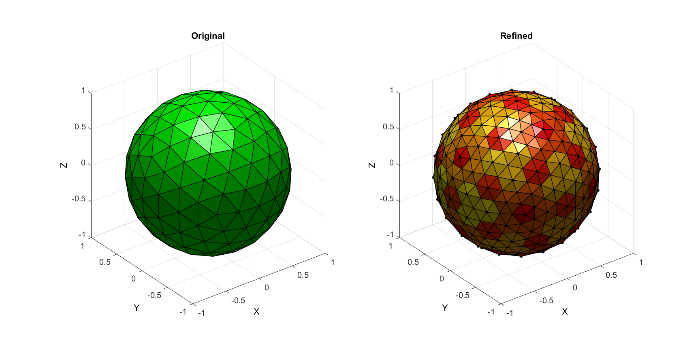
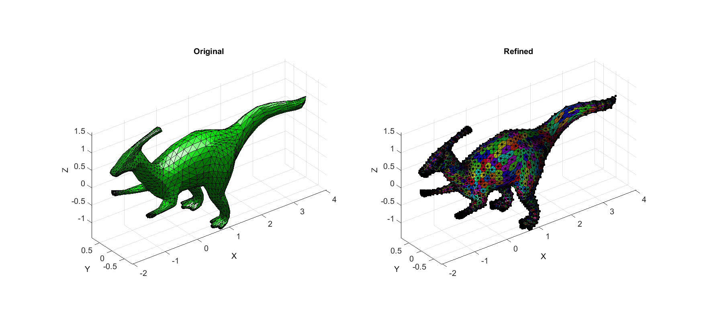

triPolyDualRefine
Below is a demonstration of the features of the triPolyDualRefine function
Contents
close all; clc; %clear;
Syntax
[Ft,Vt,Ct,indIni]=triPolyDualRefine(F,V);
Description
This function refines a triangulated polyhedron by first creating the dual tesselation and by then triangulating the dual tesselation by reintroducing the original point set near the centres of the dual faces.
Examples
Plot settings
fontSize=15; faceAlpha=1; edgeColor=0.*ones(1,3); edgeWidth=1; markerSize=15;
Example: Subtriangulating a closed polyhedron (sphere)
Building example geometry
%Defining geodesic dome r=1; %sphere radius n=2; %Refinements [F,V,~]=geoSphere(n,r); % [F,V]=parasaurolophus; % indPerm=randperm(size(F,1)); % F=F(indPerm,:);
[Fq,Vq,Cq,indIni]=triPolyDualRefine(F,V);
hf=cFigure; subplot(1,2,1); hold on; title('Original','FontSize',fontSize); xlabel('X','FontSize',fontSize); ylabel('Y','FontSize',fontSize); zlabel('Z','FontSize',fontSize); hp=patch('Faces',F,'Vertices',V,'FaceColor','g','FaceAlpha',faceAlpha,'lineWidth',edgeWidth,'edgeColor',edgeColor); % [hp]=patchNormPlot(Fq,Vq,0.2); camlight headlight; set(gca,'FontSize',fontSize); view(3); axis tight; axis equal; grid on; axis vis3d; subplot(1,2,2); hold on; title('Refined','FontSize',fontSize); xlabel('X','FontSize',fontSize); ylabel('Y','FontSize',fontSize); zlabel('Z','FontSize',fontSize); hp=patch('Faces',Fq,'Vertices',Vq,'FaceColor','flat','CData',Cq,'FaceAlpha',faceAlpha,'lineWidth',edgeWidth,'edgeColor',edgeColor); % [hp]=patchNormPlot(Fq,Vq,0.2); plotV(Vq(indIni,:),'k.','MarkerSize',markerSize); camlight headlight; set(gca,'FontSize',fontSize); colormap(autumn); view(3); axis tight; axis equal; grid on; axis vis3d;
Example: Subtriangulating a closed polyhedron (dinosaur)
Building example geometry
[F,V]=parasaurolophus;
[Fq,Vq,Cq,indIni]=triPolyDualRefine(F,V);
hf=cFigure; subplot(1,2,1); hold on; title('Original','FontSize',fontSize); xlabel('X','FontSize',fontSize); ylabel('Y','FontSize',fontSize); zlabel('Z','FontSize',fontSize); hp=patch('Faces',F,'Vertices',V,'FaceColor','g','FaceAlpha',faceAlpha,'lineWidth',edgeWidth,'edgeColor',edgeColor); % [hp]=patchNormPlot(Fq,Vq,0.2); camlight headlight; set(gca,'FontSize',fontSize); view(3); axis tight; axis equal; grid on; axis vis3d; subplot(1,2,2); hold on; title('Refined','FontSize',fontSize); xlabel('X','FontSize',fontSize); ylabel('Y','FontSize',fontSize); zlabel('Z','FontSize',fontSize); hp=patch('Faces',Fq,'Vertices',Vq,'FaceColor','flat','CData',Cq,'FaceAlpha',faceAlpha,'lineWidth',edgeWidth,'edgeColor',edgeColor); % [hp]=patchNormPlot(Fq,Vq,0.2); plotV(Vq(indIni,:),'k.','MarkerSize',markerSize); camlight headlight; set(gca,'FontSize',fontSize); cmap=hsv(size(V,1)); cmap=cmap(randperm(size(cmap,1)),:); colormap(cmap); view(3); axis tight; axis equal; grid on; axis vis3d;

GIBBON www.gibboncode.org
Kevin Mattheus Moerman, gibbon.toolbox@gmail.com